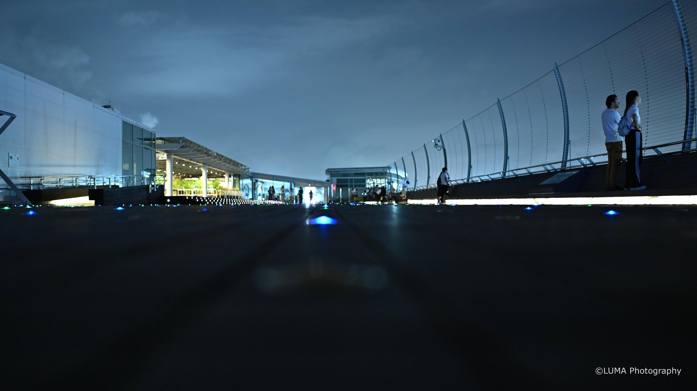
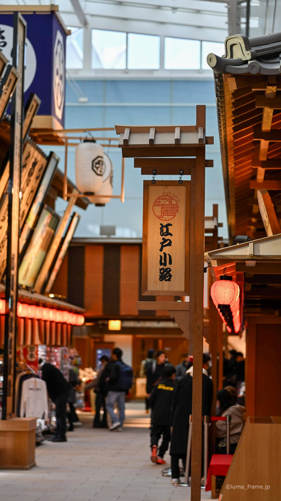
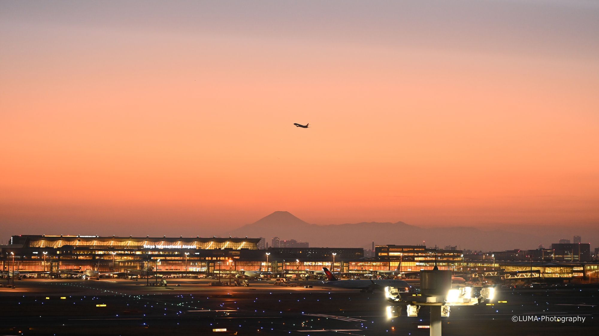
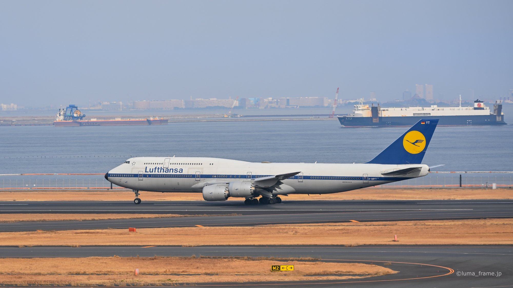
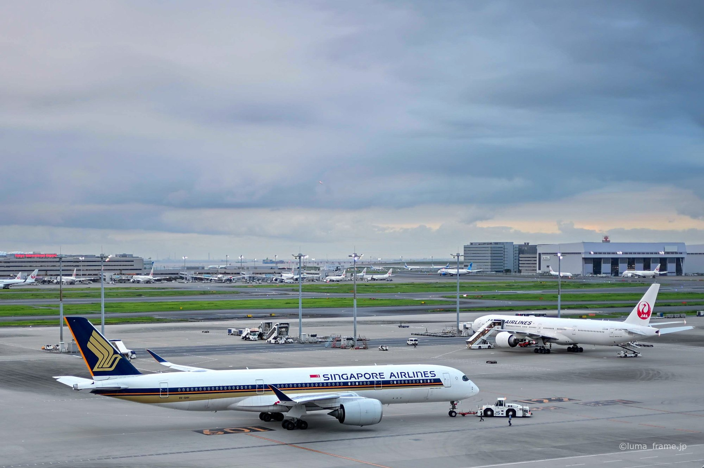
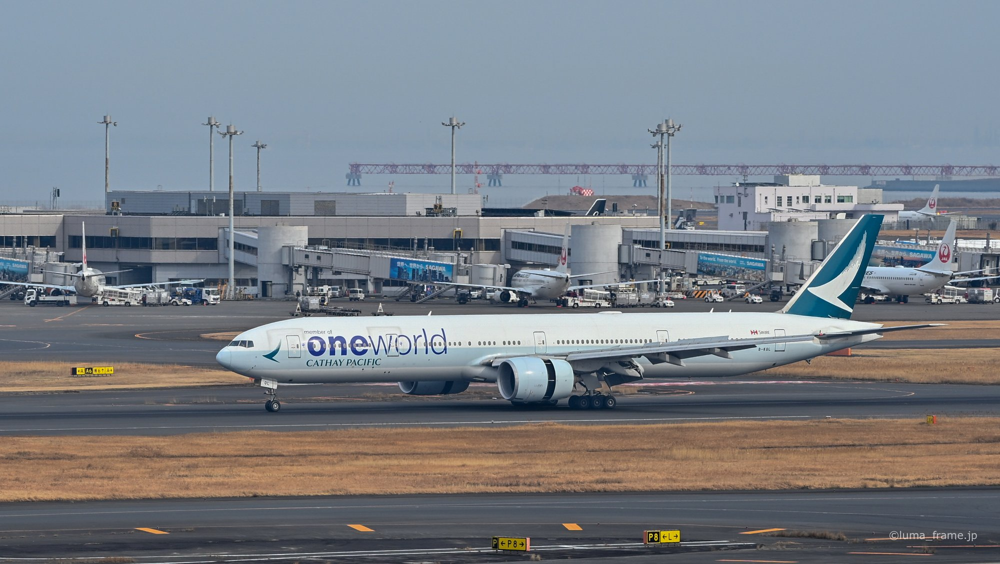
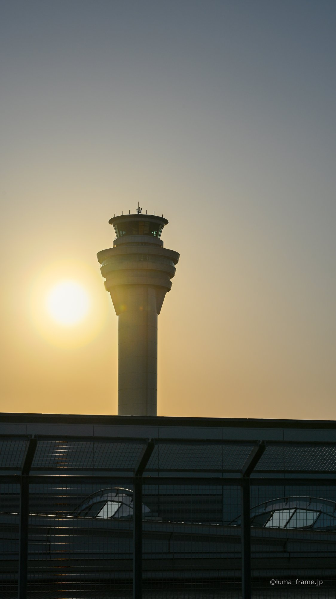

Sho's note
Mt Fuji viewpoints
The government's airport office lists the Terminal 1 6th-floor and rooftop decks and the Terminal 3 deck as places to look for Mt Fuji. Clear, cool mornings are best.
Every terminal has a free observation deck, and the wind decides which runways the planes use. Here's what I'd show you.
Planned lengths. One price per private group of up to six.
Terminals 2 and 1, deck to deck.
Price TBDThe Peace Torii, Terminal 3 and Edo Koji, then FLIGHT DECK TOKYO.
Price TBDThe decks, a hangar tour you've booked, and landings at Jonanjima around sunset.
Price TBDHaneda fits into one day. For two, I pair it with Yokohama or Asakusa.
Price TBD
I spent nine years in Brisbane, from junior high to the end of university, and I guide in English or Japanese. I check our food stops with each shop before the day.
The government's airport office lists the Terminal 1 6th-floor and rooftop decks and the Terminal 3 deck as places to look for Mt Fuji. Clear, cool mornings are best.

The 5th-floor deck is open 6:30 am to 10 pm. FLIGHT DECK TOKYO, the indoor viewing floor on the same level, is open 5 am to 11 pm.

A street in Terminal 3 built to look like old Edo, with Japanese restaurants and shops. The terminal never closes, but each shop keeps its own hours.
Haneda has four runways and runs 24 hours. With a south wind all four are in use, and with a north wind three. Either way, up to 80 take-offs and landings an hour are possible.
The airport opened as Tokyo Airport in 1931. The D runway and today's Terminal 3 opened on 21 October 2010.





Sometimes. Clear, cool days are best, especially in the morning, from Terminal 1 or Terminal 3.
The English page for the ANA Blue Base Tour says it's guided in Japanese only. For the ANA Blue Hangar Tour and JAL SKY MUSEUM, English guiding isn't confirmed, so check when you book.
It depends on the wind on the day, so I'll explain it on the deck rather than promise it in advance.
Tell me your date, how many of you there are and anything you can't eat. I'll send back a route and a free quote.
Ask for a free quote →